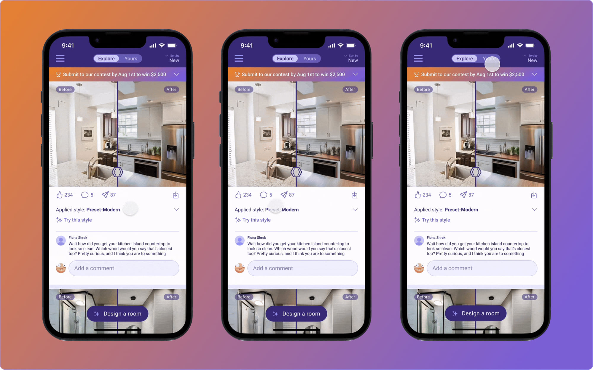
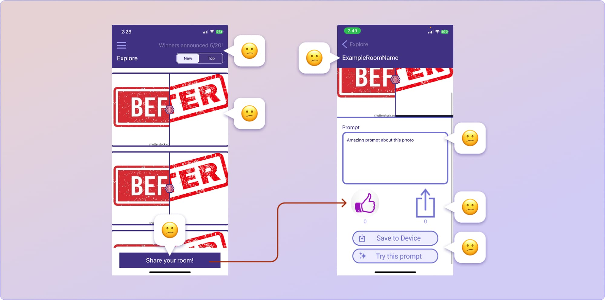

I redesigned Pluto’s explore page to function as a social for homeowners and contractors, allowing them to discover, like, comment on, and share rooms. As the lead designer, I worked with the CEO, CTO, 2 engineers over 3 months through an iterative process.

Plutos launched room design contest
Not long ago, Plutos launched the MVP version of their iOS mobile app. To expand their user base and increase brand awareness, they also introduced a design contest. I joined the team on the same day the contest was announced.
Reminding ourselves who our users were
Although the contest was publicly announced, our goal was to attract potential homeowners and individuals interested in renovating or designing their spaces."

Understanding the current app through an audit
The team had an early version of their Explore page. By auditing it, I found several problems and potential solutions.
Defining the problem
In the MVP version of Explore, users must navigate to a separate page to vote and engage with a room post, creating a clunky and less seamless experience.
Defining the success
We want the users to seamlessly navigate through the flow and doing so we hypothesize these outcomes would follow:
- Increase in user acquisition
- Increase in user engagement
Coming up with the hypothesis
By simplifying the Explore page to enhance effective participation, we can boost engagement, which in turn will help drive user acquisition.
Due to shifting priorities, the engineering team focused on other projects at the time, so the initial designs were not implemented. To adapt, I streamlined the designs and handed off a minimal version to enable faster implementation.
My Learnings and future improvments
Low user acquisition – The contest didn’t drive the expected user growth, underscoring the need for diversified marketing efforts. In hindsight, I would have pushed to release TikTok videos in addition to our in-app contest efforts.
Lack of user engagement – We prioritized building new features over strengthening engagement with the core product. In future projects, I’d identify and address this gap earlier with the team.
Concept Feature on Hold – Engineering prioritized other features, which put my designs on hold, however this gives me an opportunity to revisit it and iterate. For some designs, I rethink tradeoffs to get to a minimal versions for quicker implementation.